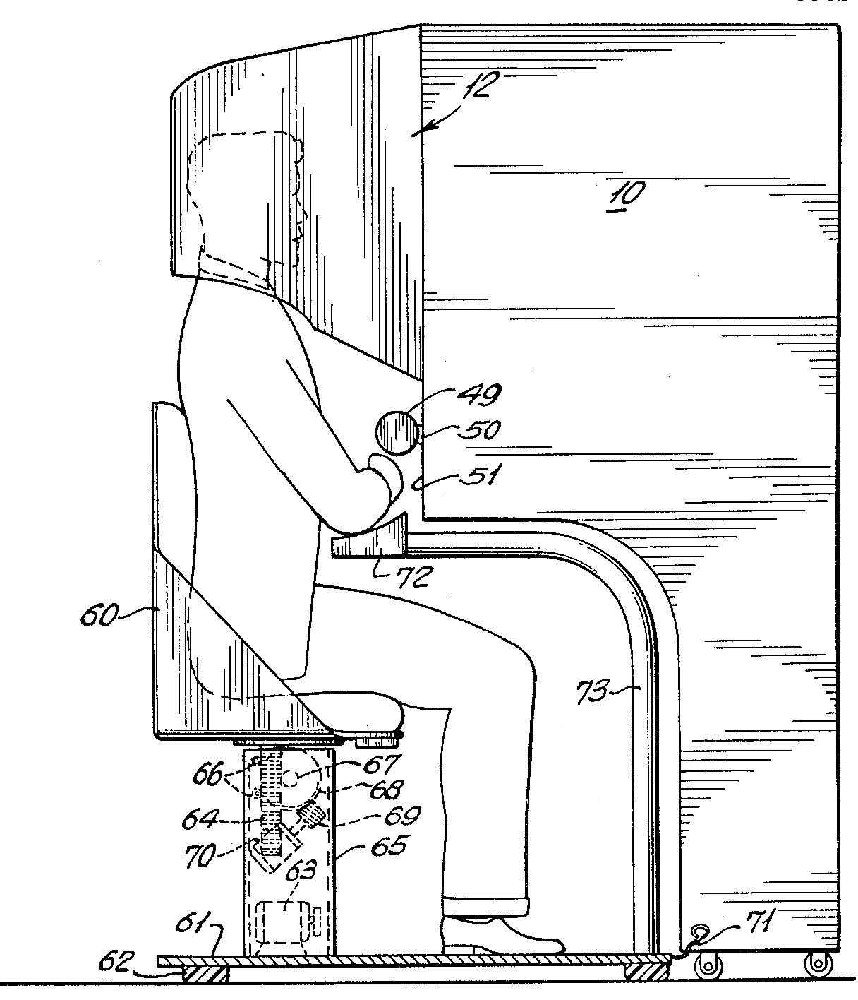

The ERA of AR (with AR.js)
Augmented reality (AR) is an interactive experience of a real-world environment where the objects that reside in the real world are enhanced by computer-generated perceptual information, sometimes across multiple sensory modalities, including visual, auditory, haptic, somatosensory and olfactory.

Augmented reality has come a long way from a science-fiction concept to a science-based reality. Until recently the costs of augmented reality were so substantial that designers could only dream of working on design projects that involved it – today things have changed and augmented reality is even available on the mobile handset. That means design for augmented reality is now an option for all shapes and sizes of UX designers.
History of Augmented Reality
Augmented reality was first achieved, to some extent, by a cinematographer called Morton Heilig in 1957. He invented the Sensorama which delivered visuals, sounds, vibration and smell to the viewer. Of course, it wasn’t computer controlled but it was the first example of an attempt at adding additional data to an experience.
Author/Copyright holder: Morton Heilig. Copyright terms and licence: Public Domain.
Then in 1968, Ivan Sutherland the American computer scientist and early Internet influence, invented the head-mounted display as a kind of window into a virtual world. The technology used at the time made the invention impractical for mass use.
In 1975, Myron Krueger, an American computer artist developed the first “virtual reality” interface in the form of “Videoplace” which allowed its users to manipulate and interact with virtual objects and to do so in real-time.
Steve Mann, a computational photography researcher, gave the world wearable computing in 1980.
The first properly functioning AR system was probably the one developed at USAF Armstrong’s Research Lab by Louis Rosenberg in 1992. This was called Virtual Fixtures and was an incredibly complex robotic system which was designed to compensate for the lack of high-speed 3D graphics processing power in the early 90s. It enabled the overlay of sensory information on a workspace to improve human productivity.
The Current State of Augmented Reality
Augmented reality is achieved through a variety of technological innovations; these can be implemented on their own or in conjunction with each other to create augmented reality.
There are apps available for or being researched for AR in nearly every industrial sector
Argumented Reality Javascript (AR.js)
AR.js is a lightweight library for Augmented Reality on the Web, coming with features like Image Tracking, Location based AR and Marker tracking.
AR on the Web
For handleheld devices (more in general, for video-see-through devices) the 'reality' is captured from one or more cameras and then shown on the device display, adding some kind of content on top of it.

For developers, to develop Augmented Reality ('AR' from now on) on the Web, means to void all the Mobile app developement efforts and costs related to App stores (validation, time to publish). It also means to re-use well known technologies like Javascript, HTML and CSS, known from a lot of developers and possibly designers.
For users, it means to reach an AR experience just visiting a website. As QR Codes are now widespread, it's also possible to scan a QR Code and reach the URL without even type. Addictionally, users do not have to reserve storage space on their download the AR app, and do not have to keep it updated.
Key points
AR.js has reached version 3. This is the official repository : https://github.com/AR-js-org/AR.js. If you want to visit the old AR.js repository, here it is : https://github.com/jeromeetienne/AR.js.
The Future
AR is the future of design and we tend to agree. Already mobile phones are such an integral part of our lives that they might as well be extensions of our bodies; as technology can be further integrated into our lives without being intrusive (a la Google Glass) – it is a certainty that augmented reality provides opportunities to enhance user experiences beyond measure.
This will almost certainly see major advances in the much-hyped but still little seen; Internet of Things. UX designers in the AR field will need to seriously consider the questions of how traditional experiences can be improved through AR – just making your cooker capable of using computer enhancements is not enough; it needs to healthier eating or better cooked food for users to care.
The future will belong to AR when it improves task efficiency or the quality of the output of an experience for the user. This is the key challenge of the 21st century UX profession.

Thanks for reading.
About the Author :

Akash Chikara
Hii, I'm a CS graduate with quite a knowledge of technology. Outside of work, I like traveling and nowadays getting an interest in writing.
Find this blog helpful? then share it with your contacts and if you find any error or mistake then do mail us Click here.